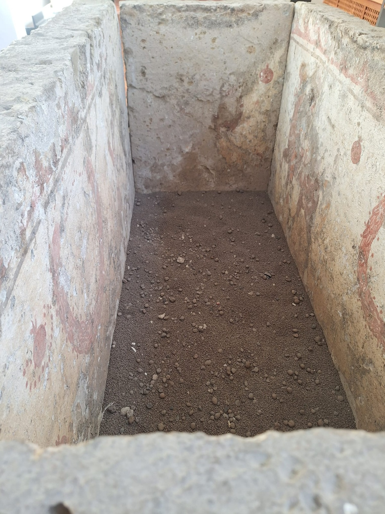

Diversi i musei Campani che raccontano la storia degli Osci nelle sue varianti locali. Testimonianze osche, tombe dipinte del IV secolo a.C., corredi funerari, l’epigrafe osca del II secolo a.C. ritrovata a San Paolo Bel Sito sono nel Museo Archeologico di Nola.

tomba dipinta IV a.c
Foto di ministero della cultura - Tratta da Museo Archeologico di Nola